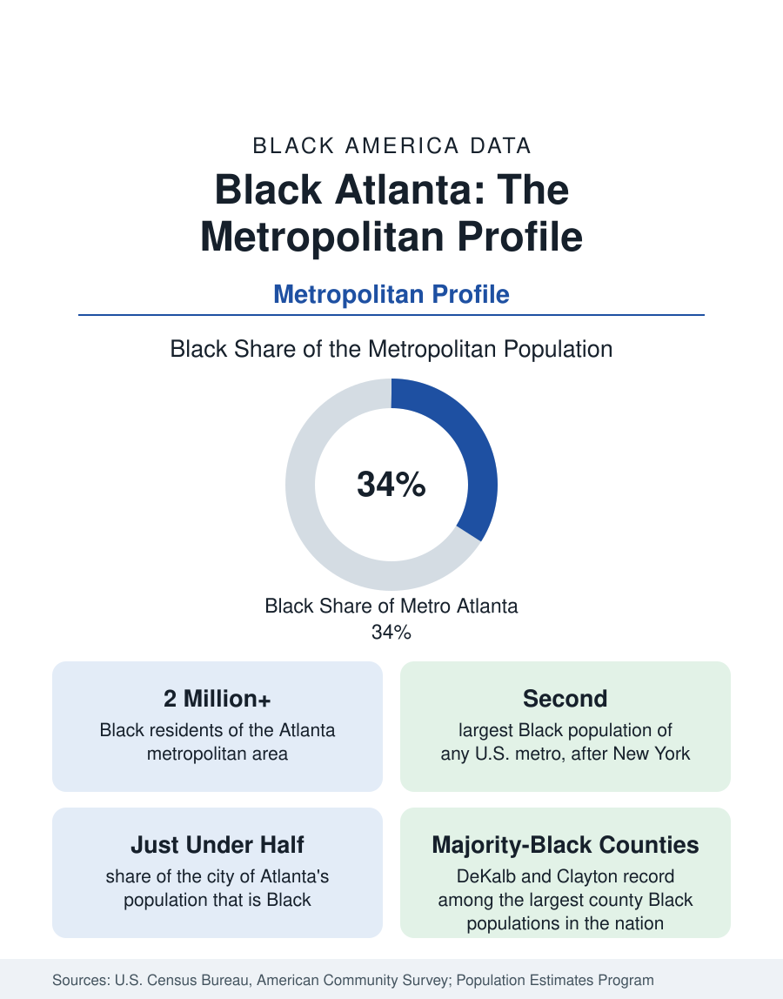

Black Cities
Black Atlanta: Population, Distribution, and Growth of a Black Metropolis
Metro Atlanta holds more than two million Black residents — roughly one in three, second only to New York. The suburban distribution, migration history, and composition of Black Atlanta in the census data.

The Atlanta metropolitan area holds the second-largest Black population of any metropolitan area in the United States, after New York: more than two million Black residents, roughly one in three people in the region. Atlanta is the standard case study in modern Black geography — a Southern metro that drew Black migrants during the Great Migration's later decades, then became the leading destination of the return migration to the South, and now holds a Black population that is simultaneously one of the country's largest, most educated, and most economically prominent. This article profiles the Atlanta metro's Black population in the census data: its size, distribution, and composition.
Size and Share
The Atlanta–Sandy Springs–Roswell metropolitan statistical area, as the Census Bureau defines it, spans more than two dozen counties and over six million residents. Its Black population — counting Black alone or in combination — exceeds two million, about 34 percent of the metro total. Only the New York metropolitan area counts more Black residents in absolute terms, and no large metro outside the South matches Atlanta's combination of scale and share. The city of Atlanta itself, the metro's core municipality of roughly half a million people, is just under half Black — a share that has declined from clear-majority levels as the city's population has grown and diversified, even as the metro-wide Black population has continued to expand.
A Suburban Population
The defining geographic fact of Black Atlanta is that it is mostly suburban. The largest county-level Black populations sit outside the city core: DeKalb County, immediately east of the city, holds one of the largest Black populations of any county in the nation and is majority Black; Clayton County to the south records one of the highest Black population shares of any large county in the country; and substantial Black populations extend through Fulton, Gwinnett, Cobb, Henry, and Douglas counties. This suburbanization mirrors the national pattern documented in the census section — the Black population of the United States is now majority-suburban in the largest metros — and Atlanta is its clearest example.
How It Grew
Atlanta's Black growth is a migration story in two movements. The first was industrial-era and modest by Northern standards: Atlanta drew Black Georgians from the state's rural counties to railroad, service, and domestic work, building institutions — including the Atlanta University Center, the nation's largest consortium of historically Black colleges — that anchored Black civic life. The second movement, from the 1970s onward, was larger and different in kind: Black households arrived from New York, Chicago, Detroit, and Los Angeles in the return migration to the South, drawn by employment growth, lower housing costs, and existing Black institutional life. Census migration data consistently rank Atlanta among the top destinations for Black movers, and the metro's Black population growth in recent decades has come more from migration than from natural increase.
Composition
The survey data describe a Black population that is, by national Black averages, relatively prosperous and credentialed. Black median household income in the metro runs above the national Black median; the share of Black adults holding bachelor's degrees is elevated by the metro's college infrastructure and by the selective nature of long-distance migration, which favors the educated. The metro holds one of the nation's largest Black professional populations, a large Black-owned business sector counted among the leaders in the business section's metro comparisons, and a substantial Black immigrant population — Caribbean and African — concentrated in the eastern suburbs. Poverty and disinvestment persist in specific corridors, particularly south and west of the core, and the metro's Black income distribution is wide; the averages describe the center of a spread, not its edges.
Reading the Atlanta Data
Atlanta illustrates three lessons that recur throughout the cities section of this reference. First, metro definitions matter: the two-million figure belongs to a 29-county statistical area, and city-proper figures describe a different, smaller geography. Second, growth by migration behaves differently from growth by natural increase — it arrives adult, credentialed, and income-carrying, changing a metro's statistics quickly. Third, share and scale are different claims: Atlanta's importance in Black America rests on holding both at once — a one-in-three share at a two-million scale — which fewer than a handful of American metros can match. The profiles that follow apply the same framework to the other great centers of Black population: New York, Chicago, Washington, Houston, and Dallas.
More in Black Cities
Black New York: The Largest Black Population in America
The New York metropolitan area holds about 3.4 million Black residents — more than any metro in the nation — and the city itself about two million. The census profile.
Black Washington: The District and the Metro
The Washington metro holds about 1.6 million Black residents, and the District itself — long a majority-Black city — now records a Black share near 41 percent. The census profile.
Black Chicago: Population of the City and the Metro
The Chicago metro holds about 1.6 million Black residents; the city itself counted 787,551 in the last census, just under 29 percent. The profile of Black Chicago.
Source: U.S. Census Bureau, American Community Survey; U.S. Census Bureau, Population Estimates Program.